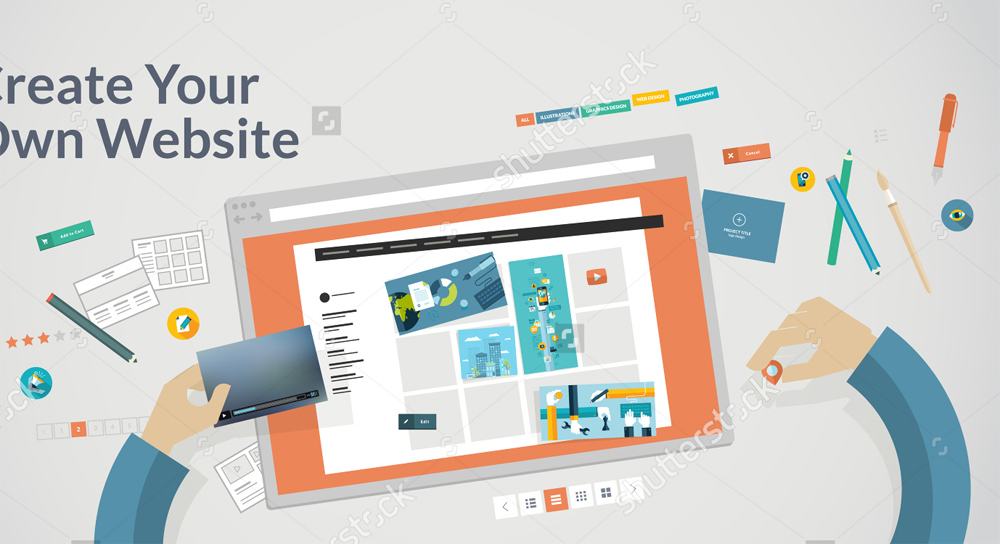

중소기업 및 소규모 사업장을 위한 템플릿 기반의 웹사이트 제작
웹사이트를 만들기는 해야하는데
어떻게 만들어야 할지는 모르겠고...
싼티나는 웹사이트를 만들고 싶지도 않고..
만들고나면 관리도 해야 하는데...
미리 제작된 템플릿을 기반으로 빠르게 제작하는 반응형 웹 제작 서비스입니다.
초기에 디자인을 선택하여 주시고 사이트에 들어갈 컨텐츠를 주신다음에는 제작 상황을 보고 컨펌만 하시면 됩니다.
혹은 의뢰인이 제작하고픈 사이트들을 벤치마킹하여 컨셉을 정하여 주시면 컨셉에 맞게 사이트 제작에 들어갑니다.
모든 사이트는 기본적으로 PC, Tablet, Mobile에 모두 대응하는 반응형 사이트로 제작 됩니다.
CMS(사이트 관리자 페이지)와 페이지를 직접 보면서 수정 할 수 있는 컨텐츠 에디터를 제공합니다.
우리는 웹사이트라는 익숙하지만
제작을 하게되는 입장에서는
아주 난감 할 수 있는 문제에 대하여
간단한 해법을 제시하려고 합니다.
사이트 제작에 경험이 없어 어떻게 시작해야 할지 모를경우
사이트 제작 후 추가적인 월 관리비 지출 없이 운영 하고싶은 경우
적은 예산으로 PC와 스마트폰 모두에 대응하는 사이트를 제작하고 싶은 경우
한정된 예산으로 인해 자체개발 방식이 부담스러운 경우
기존의 사이트가 관리가 어려워 새로 제작 하시는 경우
그냥 디자인과 내용만 정하고 나머지는 알아서 잘 만들어 줬으면 하는경우

디자인 트렌드를 잘 반영하고
전문가가 아니더라도 쉽게 관리 할 수 있게..
그리고 조금 더 돋보일 수 없을까.?
일반적인 웹사이트 제작 프로세스는 컨텐츠 제공 기획 디자인 코딩/스크립팅 개발 디버깅 사이트 오픈 입니다.
위의 사이트 제작 방식에서 탈피하여 디자인 선택 컨텐츠 제공 디자인에 컨텐츠 반영 디버깅 사이트 오픈 의 방식으로
이는 제작된 템플릿을 이용하여 빠르게 사이트를 제작 할 수 있으므로 기본적인 제작 방식에 비해 인건비, 제작시간, 디버깅에 들어가는 자원을 줄일 수 있습니다.
우리는 웹사이트라는 익숙하지만
제작을 하게되는 입장에서는
아주 난감 할 수 있는 문제에 대하여
간단한 해법을 제시하려고 합니다.
사이트를 운영하는 동안 필히 할 수 밖에 없는 페이지의 추가/업데이트 작업에 난감함을 없애고자
기존에는 웹을 공부하지 않으면 수정하기가 어려웠던 힘들었던 html 코드 직접 수정방식 또는
한정된 기능만을 제공하던 텍스트 에디터가 아닌
현재 페이지를 직접 보며 여러 디자인요소중에 원하는 부분의 디자인을 골라 간편하게 마우스로 끌어와 페이지를 직접 제작/수정 할 수 있는 기능이 있는 에디터 입니다.
컨텐츠 에디터의 내용은 지속적으로 추가 됩니다.
제작상담 - 미팅 및 전화나 이메일을 통해 자세한 상담을 받으실 수 있습니다.
견적/계약 - 선택하신 디자인과 데이터 분량에 따라 합리적인 견적을 제시합니다.
컨텐츠 제공 - 홈페이지를 제작할 기초 데이터와 스토리보드(기획서)를 제작합니다. (기초데이터 : 로고, 텍스트, 이미지 등)
디자인시안 작업 및 검수 - 메인/서브 페이지의 디자인시안을 제작하고 컨펌(고객확인)을 진행합니다.
홈페이지제작 - 디자인에 컨텐츠 반영
검수 - 수정 및 오류사항 등을 교정
제작완료 -
위 과정에서 디자인 컨셉결정과 컨텐츠 제공은 고객님이 직접 해주셔야 합니다.
리뉴얼의 경우 기존 사이트의 내용과 유사하여 컨텐츠 제공에 큰 어려움이 없을것으로 사료되오나
신규 제작일 경우 컨텐츠 제공에 어려움을 겪으신다면 내용을 임의로 넣어서 개발을 해드리고 추후 변경을 하는식으로도 가능합니다.